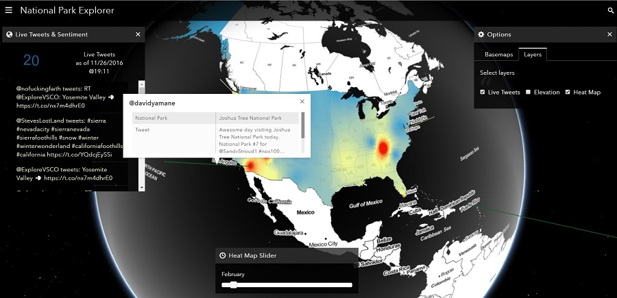

Toggle navigation
Menu
Zihan Song
WORK
ABOUT
BLOG
National Park Explorer
Who doesn't love National Park?

2016 Esri Intern Hackathon Winner!
(
Twitter
,
Instagram
)
The Esri Intern Hackathon is an annual 40-hours competition hosted by Esri company. Interns teamed up based on different domain expertise, including computer science, GIS, cartography/design, and business. I participated in the competition during 2016 summer when I was an intern at Esri headquarter in Redlands, CA. I worked with Bo, Hao, Vivian and Nick to build a web application called National Park Explorer.
This a project for picking up national parks easier. Users could pick up national park they want to explore based on their personal interests (word cloud), public live opinions (real-time twitters and sentimental information) and seasonal popularity (number of tourists). After picking up a key word, parks which are famous for this word will show up. User could pick one park and then the map will zoom in to that park. Descriptions of attractions and landscape could give the user an overview of the park. Colors of live twitters are sentimental information: red represents negative ones while green means more positive evaluations. Each extrusion represents one tweets and the height is the magnitude of emotions. Heat maps are the number of visitors in each month in 2015.
Click on the map for interactive version!